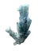

Mineral Grimoire

Indicolite QuartzAppearance
Blue threads within a clear or cloudy white point.
Origin
Worldwide.
Attributes
Indicolite Quartz has blue threads within a clear or cloudy white point and is a useful stone for stimulating out-of-body experiences and journeying.
Spiritually, Indicolite Quartz transports you through high vibrations and offers an overview of your lives, giving insight into the soul plan for the present life. Psychologically, if you have been using revenge as an escape from past pain or attack as a defence against the possibility of being hurt, or are caught in similar destructive patterns, Indicolite Quartz frees you up to offer forgiveness and tenderness both to yourself and others.
Emotionally, Indicolite Quartz releases blocked feelings and enables speaking about them. It ameliorates sadness, offering comfort and insight into the deeper causes and consequences of grief and loss. This beautiful stone teaches that no one ever mourns alone. It accesses a multitude of spirit guides and helpers who gather close to assist a soul who is dying, or one who will be left behind, through a difficult transition. It also reminds you that, while the body may die, love does not.
Indicolite Quartz also teaches that death occurs at the right time for the soul, no matter how inopportune it may appear. It says that the soul has learned its lessons or the karma of grace has come into operation, gifts have been developed and the soul has headed home. And the stone is there to comfort those left behind.
Healing
Ideal for healers, this stone prevents negativity from sticking and assists in locating the site of dis-ease – the crystal jumps when it reaches the point of greatest disharmony. Place Indicolite Quartz anywhere there is dis-ease or congestion. Indicolite Quartz is beneficial for a chronic sore throat, cellular memory, the pulmonary and immune systems, the brain, fluid imbalances, the kidney, bladder, thymus and thyroid, sinusitis, bacterial infections, the throat, larynx, lungs, oesophagus and eyes; also for soothing burns and overcoming insomnia and night sweats.
Position
Hold, grid or place as appropriate.